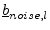
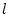
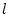

Due to the similar concept of S parameters and noise correlation
coefficients, the CAE noise analysis can be performed quite alike the
S parameter analysis (section 1.3.1). As each step
uses the S parameters to calculate the noise correlation matrix, the
noise analysis is best done step by step in parallel with the S
parameter analysis. Performing each step is as follows: We have the
noise wave correlation matrices (
 ,
,
 ) and the S parameter matrices (
) and the S parameter matrices (
 ,
) of two arbitrary circuits and want to know the correlation matrix of
the special circuit resulting from connecting two circuits at one
port.
,
) of two arbitrary circuits and want to know the correlation matrix of
the special circuit resulting from connecting two circuits at one
port.
An example is shown in fig. 2.2. What we have to do is to transform the inner noise waves and  to the open ports. Let us look upon the example. According to the signal flow graph the resulting noise wave writes as follows:
Now we can derive the first element of the new noise correlation matrix by multiplying eq. (2.25) with eq. (2.26).
| (2.27) |
| (2.28) |
All other cases of connecting circuits can be calculated the same way using the signal flow graph. The results are listed below.
If index  and
and  are within the same circuit, it results in
fig. 2.3. The following formula holds:
are within the same circuit, it results in
fig. 2.3. The following formula holds:
| (2.29) |
If the connected ports  and  are from the same circuit, the
following equations must be applied (see also
fig. 2.4) to obtain the new correlation matrix
coefficients.
and  are from the same circuit, the
following equations must be applied (see also
fig. 2.4) to obtain the new correlation matrix
coefficients.
| (2.30) |
| (2.31) |
| (2.32) |
| (2.33) |
| (2.34) |
| (2.35) |
The absolute values of the noise correlation coefficients are very small. To achieve a higher numerical precision, it is recommended to normalize the noise matrix with . After the simulation they do not have to be denormalized, because the noise parameters can be calculated by using equation (2.4) to (2.11) and omitting all occurrences of .
The transformer concept to deal with different port impedances and with differential ports (as described in section 1.3.2) can also be applied to this noise analysis.